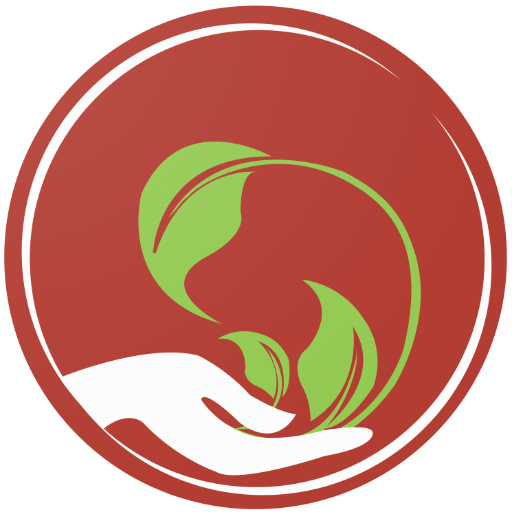

<ion-app>
  <ion-split-pane>
    <ion-menu [swipeGesture]=loggedInUser>
      <ion-header>
        <ion-toolbar style="background:#fff">
          <ion-title style="text-transform: capitalize;">{{'app_name' | translate}}
            
          </ion-title>
        </ion-toolbar>
      </ion-header>
      <ion-content>
        <ion-list>
          <div *ngFor="let p of appPages">
            <!-- *ngIf="p.url" -->
            <ion-menu-toggle auto-hide="false" *ngIf="p.title != 'Settings'">
              <ion-item [routerDirection]="'root'" (click)="navigate(p.url,p.title)">
                <ion-icon slot="start" [name]="p.icon"></ion-icon>
                <ion-label>
                  {{p.title}}
                </ion-label>
              </ion-item>
            </ion-menu-toggle>
            <ion-item button *ngIf="p.children?.length > 0" (click)="p.open = !p.open" [class.parent-active]="p.open"
              detail="false">
              <ion-icon slot="end" name="ios-arrow-forward" *ngIf="!p.open"></ion-icon>
              <ion-icon slot="end" name="ios-arrow-down" *ngIf="p.open"></ion-icon>
              <ion-icon slot="start" [name]="p.icon"></ion-icon>
              <ion-label>{{ p.title }}</ion-label>
            </ion-item>
            <!-- Children List for clicked Item -->
            <ion-list *ngIf="p.open">
              <ion-menu-toggle auto-hide="false">
                <ion-item *ngFor="let sub of p.children" class="sub-item" routerDirection="root"
                  routerLinkActive="active" style="padding-left:30px;"
                  (click)="p.open = !p.open;presentAlertCheckbox();">
                  <ion-icon [name]="sub.icon" slot="start"></ion-icon>
                  <ion-label>
                    {{ sub.title }}
                  </ion-label>
                </ion-item>
              </ion-menu-toggle>
            </ion-list>
          </div>
        </ion-list>
      </ion-content>
    </ion-menu>
    <ion-router-outlet main></ion-router-outlet>
  </ion-split-pane>
  <div *ngIf="showUpdatePop">
    <app-custom-popup [content]="appUpdate" [showPopup]="showUpdatePopup">
    </app-custom-popup>
  </div>
</ion-app>